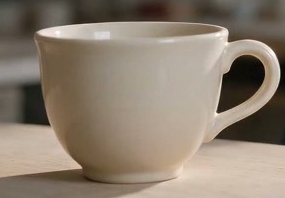
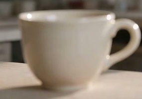
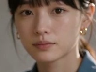
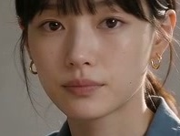

E02 / 480P · 6초 × A/B · 소리 포함
컵에서 눈으로 초점을 인계하다
원래 Claire·새 공간·종료 구도를 각각 참조한 보완 결과입니다. 중반 입·시선 편차와 초점 비교의 한계를 표시했습니다. 현재 실사 영상과 검수 메모 보기 ↗
이번 별도 실제 비용 USD0.3880 / 집행 상한USD0.40. 아래 이전 영상은 검토 이력으로 보관합니다.
이전 E02 영상·프롬프트 보관 이력
비교 요소 · 초점 대상과 전환 시점
현재 E02 초안은 컵이 인물의 얼굴에 비해 크게 보이고 테이블의 앞뒤 거리 단서가 부족해 재작업 대상입니다. 초점 변화와 별개로 공간 비례 기준을 통과하지 못한 것으로 재판정했습니다.
기존 영상은 검토 이력으로 보존합니다. 같은 구도를 확대·축소하는 대신 새 공통 스틸에서 정상 컵 크기·보이는 테이블 경계·카메라 거리비를 다시 잡습니다. 기존 시점·시선 검수는 공간 비례 통과를 뜻하지 않습니다.
같은 영역을 확대해 비교하기
동일한 상대 위치를 자른 웹 확대입니다. 선명도·그림자·밝기를 보정하지 않았습니다. 영상은 위 포스터와 같은 실제 시점입니다.
컵 테두리


눈과 얼굴


A → B 순서로 이어 보기 · 약12초
처음 6.11초는 A, 이후는 B입니다. 각 테이크의 고유 원음이 이어집니다.
A · 컵에 초점 고정
실제 요청 프롬프트·수정 이력
E02-scene 입력 스틸 · 웹 표시용 JPEG입니다.

E02-scene-image-v1 · 미선택
API 상태 succeeded · $0.063
A photographed live-action frame for a controlled lighting or focus study. Preserve the adult Korean woman in reference image1: the same face, age impression, black hair and bangs, earrings and recognizable proportions. Natural unretouched skin at this viewing distance, ordinary lip texture, stray hairs and believable cloth; no facial reshaping or artificial pore pattern. No readable text, logos or camera equipment in frame. A fixed medium view across a quiet workshop tea counter. Claire sits on the right third, facing and looking at the actual camera lens, lips relaxed and closed, with both hands below frame. She wears her blue-gray shirt. One plain cream ceramic cup sits stationary in the lower-left foreground, roughly1m from the camera; its entire rim and handle remain inside frame with space below its base. Claire is about2.4m away. Eye-level camera with a slight downward framing bias,35mm lens look,16:9. The cup rim and handle are crisp; Claire is softly out of focus but her identity and head shape are still recognizable. One soft window is the key, and distant shelves remain quiet shapes. The cup and Claire occupy different depth planes. No steam, pouring or extra objects.
E02-scene-image-v2 · 미선택
API 상태 failed · $0
A photographed live-action frame for a controlled lighting or focus study. Preserve the adult Korean woman in reference image1: the same face, age impression, black hair and bangs, earrings and recognizable proportions. Natural unretouched skin at this viewing distance, ordinary lip texture, stray hairs and believable cloth; no facial reshaping or artificial pore pattern. No readable text, logos or camera equipment in frame. A fixed medium view across a quiet workshop tea counter. Claire sits on the right third, facing and looking at the actual camera lens, lips relaxed and closed, with both hands below frame. She wears her blue-gray shirt. One plain cream ceramic cup sits stationary in the lower-left foreground, roughly1m from the camera; its entire rim and handle remain inside frame with space below its base. Claire is about2.4m away. Eye-level camera with a slight downward framing bias,35mm lens look,16:9. Reference image2 is the earlier scene layout, not its focus. Keep that layout and camera framing. Place the ONLY sharp focus plane on the foreground cup rim and handle: their ceramic edges are tack-sharp. Claire’s eyes, eyelashes and hair behind the cup are visibly and strongly defocused, with no sharp facial edges, while her overall silhouette is retained. This is foreground-object focus, not a sharp portrait. One soft window is the key, and distant shelves remain quiet shapes. The cup and Claire occupy different depth planes. No steam, pouring or extra objects.
E02-scene-image-v3 · 미선택
API 상태 failed · $0
A photographed live-action frame for a controlled lighting or focus study. Preserve the adult Korean woman in reference image1: the same face, age impression, black hair and bangs, earrings and recognizable proportions. Natural unretouched skin at this viewing distance, ordinary lip texture, stray hairs and believable cloth; no facial reshaping or artificial pore pattern. No readable text, logos or camera equipment in frame. A fixed medium view across a quiet workshop tea counter. Claire sits on the right third, facing and looking at the actual camera lens, lips relaxed and closed, with both hands below frame. She wears her blue-gray shirt. One plain cream ceramic cup sits stationary in the lower-left foreground, roughly1m from the camera; its entire rim and handle remain inside frame with space below its base. Claire is about2.4m away. Eye-level camera with a slight downward framing bias,35mm lens look,16:9. Reference image1 is the earlier full scene: preserve Claire’s existing face and the whole scene layout, not its focus. Keep that layout and camera framing. Place the ONLY sharp focus plane on the foreground cup rim and handle: their ceramic edges are tack-sharp. Claire’s eyes, eyelashes and hair behind the cup are visibly and strongly defocused, with no sharp facial edges, while her overall silhouette is retained. This is foreground-object focus, not a sharp portrait. One soft window is the key, and distant shelves remain quiet shapes. The cup and Claire occupy different depth planes. No steam, pouring or extra objects.
E02-scene-image-v4 · 미선택
API 상태 failed · $0
A photographed live-action frame for a controlled lighting or focus study. Preserve the adult Korean woman in reference image1: the same face, age impression, black hair and bangs, earrings and recognizable proportions. Natural unretouched skin at this viewing distance, ordinary lip texture, stray hairs and believable cloth; no facial reshaping or artificial pore pattern. No readable text, logos or camera equipment in frame. A fixed medium view across a quiet workshop tea counter. Claire sits on the right third, facing and looking at the actual camera lens, lips relaxed and closed, with both hands below frame. She wears her blue-gray shirt. One plain cream ceramic cup sits stationary in the lower-left foreground, roughly1m from the camera; its entire rim and handle remain inside frame with space below its base. Claire is about2.4m away. Eye-level camera with a slight downward framing bias,35mm lens look,16:9. Place the ONLY sharp focus plane on the foreground cup rim and handle: their ceramic edges are tack-sharp. Claire’s eyes, eyelashes and hair behind the cup are visibly and strongly defocused, with no sharp facial edges, while her overall silhouette is retained. This is foreground-object focus, not a sharp portrait. One soft window is the key, and distant shelves remain quiet shapes. The cup and Claire occupy different depth planes. No steam, pouring or extra objects.
E02-scene-image-v5 · 미선택
API 상태 succeeded · $0.063
A photographed live-action frame for a controlled lighting or focus study. Preserve the adult Korean woman in reference image1: the same face, age impression, black hair and bangs, earrings and recognizable proportions. Natural unretouched skin at this viewing distance, ordinary lip texture, stray hairs and believable cloth; no facial reshaping or artificial pore pattern. No readable text, logos or camera equipment in frame. A fixed medium view across a quiet workshop tea counter. Claire sits on the right third, facing and looking at the actual camera lens, lips relaxed and closed, with both hands below frame. She wears her blue-gray shirt. One plain cream ceramic cup sits stationary in the lower-left foreground, roughly1m from the camera; its entire rim and handle remain inside frame with space below its base. Claire is about2.4m away. Eye-level camera with a slight downward framing bias,35mm lens look,16:9. Place the ONLY sharp focus plane on the foreground cup rim and handle: their ceramic edges are tack-sharp. Claire’s eyes, eyelashes and hair behind the cup are visibly and strongly defocused, with no sharp facial edges, while her overall silhouette is retained. This is foreground-object focus, not a sharp portrait. One soft window is the key, and distant shelves remain quiet shapes. The cup and Claire occupy different depth planes. No steam, pouring or extra objects.
E02-a-video-v1 · 미선택
API 상태 succeeded · $0.1026
One continuous six-second photographic live-action shot beginning at the supplied first frame. Preserve the scene, identity, wardrobe, cup or umbrella geometry, framing, light and exposure except for the explicitly tested variable. The camera is physically locked: no dolly, pan, zoom, cuts, reframing or stabilization warp. Claire looks at the actual stationary lens, breathes naturally and makes brief natural blinks; no speech or mouthing words. No music, text or added person. Hold focus on the foreground cup rim and handle for all six seconds. Claire remains softly out of focus behind it. The cup and hands do not move. Maintain the original focus and depth relationships. Native sound recorded for this take: low workshop room tone and ordinary quiet breathing, no focus-motor cue or dramatic accent.
E02-a-video-v2 · 미선택
API 상태 succeeded · $0.1026
One continuous six-second photographic live-action shot beginning at the supplied first frame. Preserve the scene, identity, wardrobe, cup or umbrella geometry, framing, light and exposure except for the explicitly tested variable. The camera is physically locked: no dolly, pan, zoom, cuts, reframing or stabilization warp. Claire keeps both eyes oriented toward the actual stationary lens throughout the entire shot, with brief natural blinks and quiet nasal breathing; her head and chin keep the first-frame angle. She does not look down at the cup. Her lips remain relaxed and closed, with no speech or mouthing words. No music, text or added person. Hold focus on the foreground cup rim and handle for all six seconds. Claire remains softly out of focus behind it. The cup and hands do not move. Maintain the original focus and depth relationships. Native sound recorded for this take: low workshop room tone and ordinary quiet breathing, no focus-motor cue or dramatic accent.
E02-b-video-v1 · 미선택
API 상태 succeeded · $0.1026
One continuous six-second photographic live-action shot beginning at the supplied first frame. Preserve the scene, identity, wardrobe, cup or umbrella geometry, framing, light and exposure except for the explicitly tested variable. The camera is physically locked: no dolly, pan, zoom, cuts, reframing or stabilization warp. Claire looks at the actual stationary lens, breathes naturally and makes brief natural blinks; no speech or mouthing words. No music, text or added person. Seconds0–2: hold focus on the cup rim and handle, with Claire softly out of focus. Seconds2–3: make one smooth focus pull from the stationary cup to Claire’s eyes. Seconds3–6: hold her eyes and face sharp while the cup becomes soft; preserve her facial identity as it resolves. The change is optical focus only: no object moves, no face morph and no camera move. Native sound recorded for this take: low workshop room tone and ordinary quiet breathing, no focus-motor cue or dramatic accent.
E02-b-video-v2 · 미선택
API 상태 succeeded · $0.1026
One continuous six-second photographic live-action shot beginning at the supplied first frame. Preserve the scene, identity, wardrobe, cup or umbrella geometry, framing, light and exposure except for the explicitly tested variable. The camera is physically locked: no dolly, pan, zoom, cuts, reframing or stabilization warp. Claire keeps both eyes oriented toward the actual stationary lens throughout the entire shot, with brief natural blinks and quiet nasal breathing; her head and chin keep the first-frame angle. The focus pull belongs to the camera lens only: she does not look down at the cup or follow the focus with her gaze. Her lips remain relaxed and closed, with no speech or mouthing words. No music, text or added person. Seconds0–2: hold focus on the cup rim and handle, with Claire softly out of focus. Seconds2–3: make one smooth focus pull from the stationary cup to Claire’s eyes. Seconds3–6: hold her eyes and face sharp while the cup becomes soft; preserve her facial identity as it resolves. The change is optical focus only: no object moves, no face morph and no camera move. Native sound recorded for this take: low workshop room tone and ordinary quiet breathing, no focus-motor cue or dramatic accent.